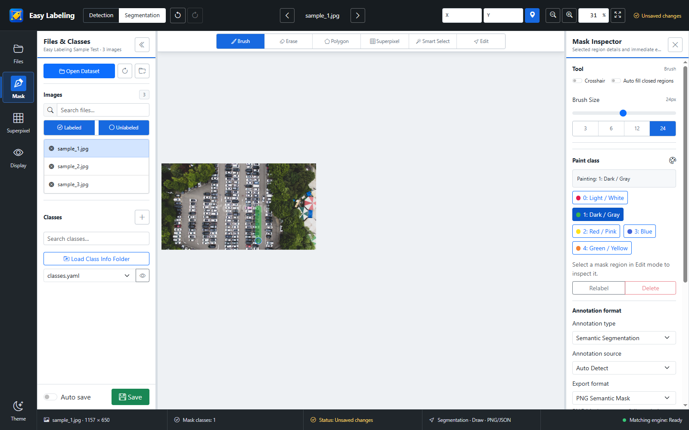
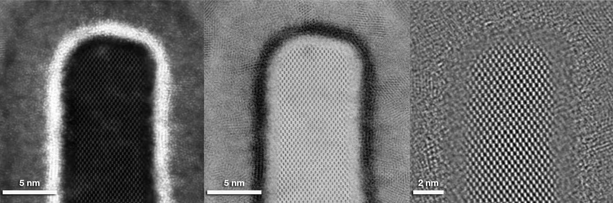

SEGMENTATION · LOCAL-FIRST DATA
미세 경계를 편집하고, 데이터는 로컬에 저장
보안이 중요한 반도체 이미지를 외부 클라우드에 업로드하지 않고 작업합니다.

실제 프로그램 UI · 화면의 차량 이미지는 기능 설명용 내장 데모
색상 마스크를 직접 그리거나 수정하고, 클래스별 영역을 검수할 수 있습니다.

지정 샘플 · TEM정밀 편집Brush · Erase · Polygon · Superpixel · Smart Select
형식 선택Semantic / Instance 및 목적별 내보내기 형식 지원
YOLO SegCOCOPNG MaskLabelMe
로컬 중심 관리이미지·라벨을 선택한 폴더에서 읽고 저장하며 Auto save와 Review 흐름을 제공합니다.